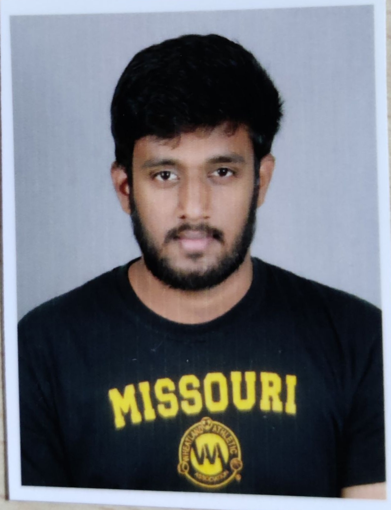

Summary

This is Sahith Reddy,A Devops Engineer working for a hyderabad based Company
I love to play sports like badminton,Volleyball,cricket,etc.In my free time i read &
listen to books to understand how the world works and to fulfill my curious mind
Education
- schooling - Bethany Academy till 2012
- Intermediate - Sri Mega Study Circle 2013-2015
- Break - 2015-2016
- Bachelor's in Computer Science - 2016-2021
Work Experience
- Joined mroads company as intern on May 20th ,2019
- Full time as Jr.Devops Engineer 2020
- Promoted to Devops Engineer in 2023 in mroads
Skills
- AWS services like ec2,rds,s3,etc
- Devops tools like jenkins,Git,Jira,etc
Certificationa and Acheivements
- AWS certified cloud practitioner,AWS certified Devops Engineer
- Won Trophies for volleyball teams